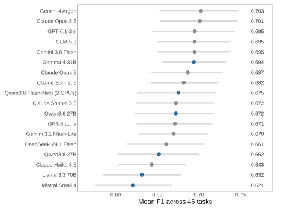
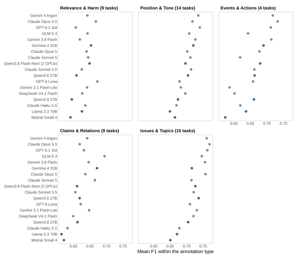
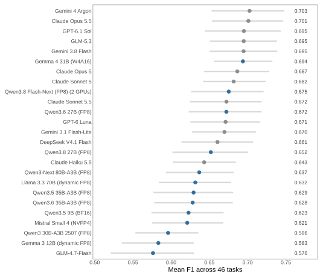
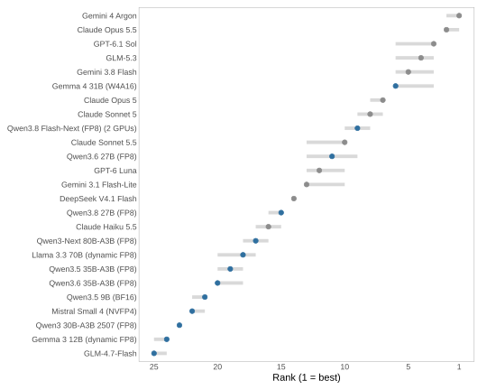

On this page, I compare the performance and cost of 25 language models – 13 open-weight models as well as 12 commercial models that are accessed through an API – on text classification tasks from political science. I rely on 46 coding tasks drawn from published papers, replication archives and public data sets, covering relevance, stance, tone, events, claims and topics. For each task, every model codes the same 100 texts (50 for the six tasks with the longest texts), and I compare the labels assigned by the model to the labels assigned by human coders in the original data.
Overall, I find that differences between models are small. Gemini 4 Argon has the highest mean F1 across tasks (0.703), and the best open-weight model, Gemma 4 31B (W4A16), reaches 0.694, which is higher than seven of the 12 API models. In addition, differences of a few hundredths in the mean F1 often reverse on individual tasks – researchers who want to choose a model should therefore look at the tasks that are closest to their own application.
Overall performance

Cost and performance
![Cost and performance. Higher prices buy relatively small gains in accuracy. Gemini 4 Argon costs about 65 times as much per text as DeepSeek V4.1 Flash, the cheapest API model, and scores 0.042 higher (at batch prices, the ratio is about 32 instead of 65). Five of the 12 API models score above the best open-weight model that runs on one GPU (dashed line), for which there is no per-text charge. Costs are per 1,000 texts at standard prices at the time of each run, and hollow points are estimates based on token counts rather than provider bills.](figures/fig-cost-f1.svg)
API and open models by task
![API and open models by task. Each row shows one task, and points show the best API score minus the best score among the 12 open-weight models that run on one GPU. An open model matches or beats the best API model on 14 of the 46 tasks (blue points), although this number is somewhat inflated in favor of open models, since on every task I pick the best out of 12 open models. If I compare a fixed pair of models instead – Gemma 4 31B and Gemini 4 Argon – Gemma matches or beats Gemini on 18 tasks, and Gemini leads by 0.009 F1 on average.](figures/fig-recent-task-gap.svg)
Performance by annotation type

Coding complexity
![Coding complexity. The gap between API and open models increases with coding complexity. If I compare the best open model on each task with the best API model on that task, the open model is behind by 0.02 F1 on the 17 low-complexity tasks, while it trails by about 0.04 F1 on medium- and high-complexity tasks. High-complexity tasks allow several labels per text or use at least eight labels in practice, and medium-complexity tasks use at least three labels or have a prompt of 300 words or more. To count the number of labels in practice, I use the exponential of the entropy of the gold labels, which gives less weight to rare labels than to common ones.](figures/fig-recent-complexity.svg)
All 25 models and open-model speed
The first figure repeats the overview for all 25 models. The second figure compares the speed of the 12 open-weight models for which I recorded generation time.
Overall performance, all models

Quality and generation time
![Quality and generation time. Each point shows one open-weight model, with mean F1 plotted against generation time per text on one RTX PRO 6000 Blackwell GPU. The models in each panel coded the same texts with identical settings, but in the first panel vLLM processed as many texts at once as memory allowed, while in the second panel I limited it to 16 texts at a time, so I would only compare times within a panel and not across the two panels. In the first panel, the 9 models need between 0.3 and 3.0 minutes per 1,000 texts, and in the second panel the 3 models need between 0.6 and 3.2 minutes (not counting the time it takes to load a model or to wait in the queue).](figures/fig-speed.svg)
How much the ranking depends on single tasks
Rank when one task is left out

The 46 tasks
Each line gives the task, the study or dataset it comes from, and what the model codes.
- arslan claimbuster checkworthy (Arslan et al. 2020 (ClaimBuster)): claim type, one of 3 categories.
- ballard incivility (Ballard 2022): uncivil, yes or no.
- benoit manifesto economic position (Benoit et al. 2016): economic position, one of 5 categories.
- benoit manifesto social position (Benoit et al. 2016): social position, one of 5 categories.
- benson tucker unsc government stance (Benson and Tucker (UNCR) and CR-UNSC 2024): government stance, one of 4 categories.
- bestvater kavanaugh stance (Bestvater and Monroe 2023): pro kavanaugh, yes or no.
- bestvater wm stance (Bestvater and Monroe 2023): pro womens march, yes or no.
- bevan uk pmqs policy topic (Bevan and John 2016 (UK Policy Agendas Project, Prime Minister's Questions)): policy topic, one of 21 categories.
- brandt gtd attack type (Brandt et al. 2025): attack type, one of 8 categories.
- burnham covid threat minimization (Burnham 2025): threat minimizing, yes or no.
- burnham trump stance (Burnham 2025): stance toward trump, one of 3 categories.
- cap crs policy topic (Policy Agendas Project 2025 and Congressional Research Service products): policy topic, one of 21 categories.
- cap executive order policy topic (Policy Agendas Project 2025 and Federal Register executive orders): policy topic, one of 21 categories.
- cap party platform policy topic (Policy Agendas Project 2025): policy topic, one of 21 categories.
- chalkidis trump populism (Chalkidis, Brandl and Aslanidis 2026): populism, one of 4 categories.
- dicocco manifesto populism (Di Cocco and Monechi 2022): populist, yes or no.
- douglass icbe sentence event type (Douglass et al. 2024): event type, one of 5 categories.
- erhard popbert populism (Erhard et al. 2025 (PopBERT)): 4 yes-or-no labels (anti elitism, people centrism, left wing, ...).
- erlich ati topics (Erlich et al. 2022): 6 yes-or-no labels (Activities, Budget, Evaluation, ...).
- gilardi stance (Gilardi et al. 2023): stance, one of 3 categories.
- gpd speech populism (Hawkins et al. 2025 (Global Populism Database v2.1)): populism, one of 3 categories.
- halterman keith bfrs (Halterman and Keith 2026): event type, one of 12 categories.
- halterman keith cmp (Halterman and Keith 2026 plus Manifesto Project 2025): policy domain, one of 7 categories.
- heseltine politician tweet tone (Heseltine and Clemm von Hohenberg 2024): tone, one of 3 categories.
- horak czech propaganda (Horák et al. 2024 (MU Propaganda dataset)): 5 yes-or-no labels (blaming, opinion, labeling, ...).
- kiesel hyperpartisan article (Kiesel et al. 2019): hyperpartisan, yes or no.
- lemens gallego tweet position3 (Le Mens and Gallego 2025): position, one of 3 categories.
- liu gvfc frame (Liu et al. 2019 (Gun Violence Frame Corpus, CoNLL 2019)): frame, one of 9 categories.
- mellon bes mii 2024 (Mellon et al. 2024): issue, one of 49 categories.
- mets estonian immigration stance (Mets et al. 2024 (Estonian immigration stance)): stance, one of 3 categories.
- muller fujimura campaign policy area (Müller and Fujimura 2025): policy area, one of 12 categories.
- muller proksch polnos nostalgia (Müller and Proksch 2024 (PolNos, BJPolS)): nostalgia, yes or no.
- ornstein scotus sentiment (Ornstein et al. 2025): sentiment, one of 3 categories.
- parlasent en sentiment (Mochtak, Rupnik and Ljubešić 2023 (ParlaSent 1.0, English)): sentiment, one of 3 categories.
- plover cameo event (Halterman et al. 2023): event type, one of 18 categories.
- politicause causal relation (Garcia Corral et al. 2024): causal relation, yes or no.
- rheault line of fire incivility (Rheault, Rayment, and Musulan 2019): uncivil, yes or no.
- rivlin angert pdd delegitimization (Rivlin-Angert and Mor-Lan 2025 (PDD, EMNLP 2025)): delegitimization, yes or no.
- scdb opinion issue area (Spaeth et al. (Supreme Court Database), via Chalkidis et al. 2022 (LexGLUE)): issue area, one of 12 categories.
- theocharis dynamics incivility (Theocharis et al. 2020): uncivil, yes or no.
- thomas qevasion clarity (Thomas et al. 2024 (QEvasion / CLARITY)): clarity, one of 3 categories.
- toxicity protests es (González-Bustamante 2024): toxic, yes or no.
- trager mfrc political moral (Trager et al. 2022 (Moral Foundations Reddit Corpus)): 5 yes-or-no labels (Care, Equality, Proportionality, ...).
- twitcivility impoliteness (Pendzel et al. 2023): impolite, yes or no.
- wesleyan creative ads 2022 (Zhang et al. 2025): tone, one of 3 categories.
- yan bernhard offensive (Yan and Bernhard 2024): offensive, yes or no.
Not evaluated and excluded models
The models below are not ranked, either because I was not able to run them, in which case they are listed as not evaluated together with the reason, or because a run finished but violated the rules of the benchmark, in which case they are listed as excluded.
The open-weight models on this page are a selection rather than a complete list, and whether I can run a given model depends not only on its size but also on its weight files, its quantization, software support and GPU memory – if a model is missing, this does not say anything about its quality.
- No additional candidate status has been recorded.
Results from the November 2026 release, in which I compared 43 models on 33 tasks (24 of which are also part of the 46 tasks that I use here), are still available as release refresh_20261106, although the two sets of results are not directly comparable, since the tasks, the texts and many of the models differ.
Where the models ran
- API models: I sent the requests to the API models between 15 and 18 November 2026, through OpenRouter's batch endpoint for all models except Claude Sonnet 5, which I ran through Anthropic's batch endpoint, and DeepSeek V4.1 Flash, which has no batch endpoint and received one request per text. OpenRouter checks batch requests against the provider's content policy and refuses the whole batch if one text is flagged, so I left out the two texts that were flagged for the Anthropic models and score every model on the remaining texts.
- Open-weight models: each model ran on a single NVIDIA RTX PRO 6000 Blackwell GPU (96 GB of memory) on UC Davis's Hive computing cluster, using vLLM 0.26 at temperature 0. The exception is Qwen3.8 Flash-Next, which ran on two GPUs with a development version of vLLM.
- Settings: reasoning is turned off for all models where this is possible, otherwise it is set to the lowest available level. API models run at their provider's default temperature, except for the Gemini models, GLM-5.3 and DeepSeek V4.1 Flash, which run at temperature 0. Since every model coded every text only once, I cannot say how much the answers of a given model vary between runs. All models may return at most 256 tokens, with the exception of the five models that cannot turn reasoning off (Claude Opus 5.5, Claude Sonnet 5.5, GPT-6.1 Sol, Gemini 4 Argon and GLM-5.3), which may return up to 1,024 tokens (2,048 for the first 40 texts), and Gemini 3.8 Flash, which may return up to 1,024 tokens.
- Not tested: I did not run the API models with extended reasoning, which increases both cost and response time, and I did not run the largest open-weight models (Kimi K3 and MiniMax M3), since these do not run on this hardware. It is possible that the strongest configurations of these models would score higher than the top scores on this page.
Methods and limitations
Sample. For each task, I draw 100 texts (50 for the six tasks with the longest texts) at random, stratified by task, from the texts that the open-weight models coded, and I score every model on the same 4,298 texts. All models receive the same texts, gold labels and prompts. I only reuse earlier predictions if inputs and settings match exactly.
Scoring. For binary tasks, I use the F1 score for the positive class, for tasks with several binary labels I use the average of the per-label F1 scores, and for categorical tasks with a single label I use macro F1, which gives equal weight to each class. If a class appears neither in the gold labels nor in the predictions, its F1 is 0 by convention, which does not say anything about the model. Unusable answers are counted as incorrect, while infrastructure failures are recorded separately.
Limits. All results are based on 46 tasks. Since most tasks are taken from published data sets, some of the texts or labels may have been part of the training data of the models, which would increase their scores, and I am not able to rule this out. Before using a model at scale, researchers should validate it on labeled examples from their own task.
How to cite
Hilbig, Hanno. 2026. Political Science LLM Benchmark. Results as of November 2026, release tasks46_20261119. https://www.hannohilbig.com/llm-benchmark/.